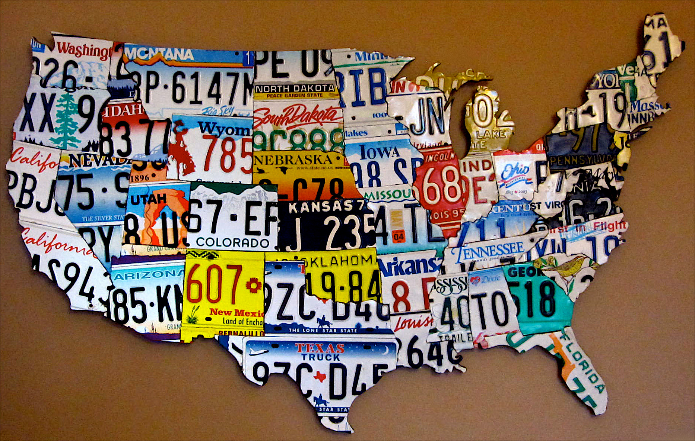

Штаты
Соединенные Штаты Америки - федеративное государство, субъектами которого являются пятьдесят штатов. Штаты США разделяют суверенитет с федеральнымправительством США, делегируя ему ряд оговоренных Конституцией США функций (оборона, международные отношения и другие). В то же время штаты сохраняют самостоятельность во многих важнейших вопросах, как, например, борьба с преступностью, образование здравоохранение и транспорт.
Каждый из штатов управляется по той же схеме разделения властей (законодательная, исполнительная и судебная), что и федеральное правительство Соединенных Штатов. Законодательные собрания сорока девяти штатов состоят, как и Конгресс США, из двух палат (исключением является Небраска, где у законодателей всего одна палата). Руководителем исполнительной власти штата является губернатор.
| Штат | Полное название | Обозначение | Дата основания | Столица |
|---|---|---|---|---|
| Айдахо | State of Idaho | ID | 3 июля 1890 | Бойсе |
| Айова | State of Iowa | IA | 28 декабря 1846 | Де-Мойн |
| Алабама | State of Alabama | AL | 14 декабря 1819 | Монтгомери |
| Аляска | State of Alaska | AK | 3 января 1959 | Джуно |
| Аризона | State of Arizona | AZ | 14 февраля 1912 | Финикс |
| Арканзас | State of Arkansas | AR | 15 июня 1836 | Литл-Рок |
| Вайоминг | State of Wyoming | WY | 10 июля 1890 | Шайенн |
| Вашингтон | State of Washington | WA | 11 ноября 1889 | Олимпия |
| Вермонт | State of Vermont | VT | 4 марта 1791 | Монтпилиер |
| Вирджиния | Commonwealth of Virginia | VA | 25 июня 1788 | Ричмонд |
| Висконсин | State of Wisconsin | WI | 29 мая 1848 | Мэдисон |
| Гавайи | State of Hawaii | HI | 21 августа 1959 | Гонолулу |
| Делавэр | State of Delaware | DE | 7 декабря 1787 | Довер |
| Джорджия | State of Georgia | GA | 2 января 1788 | Атланта |
| Западная Вирджиния | State of West Virginia | WV | 20 июня 1863 | Чарлстон |
| Иллинойс | State of Illinois | IL | 3 декабря 1818 | Спрингфилд |
| Индиана | State of Indiana | IN | 11 декабря 1816 | Индианаполис |
| Калифорния | State of California | CA | 9 сентября 1850 | Сакраменто |
| Канзас | State of Kansas | KS | 29 января 1861 | Топека |
| Кентукки | Commonwealth of Kentucky | KY | 1 июня 1792 | Франкфорт |
| Колорадо | State of Colorado | CO | 1 августа 1876 | Денвер |
| Коннектикут | State of Connecticut | CT | 9 января 1788 | Хартфорд |
| Луизиана | State of Louisiana | LA | 30 апреля 1812 | Батон-Руж |
| Массачусетс | Commonwealth of Massachusetts | MA | 6 февраля 1788 | Бостон |
| Миннесота | State of Minnesota | MN | 11 мая 1858 | Сент-Пол |
| Миссисипи | State of Mississippi | MS | 10 декабря 1817 | Джексон |
| Миссури | State of Missouri | MO | 10 августа 1821 | Джефферсон-Сити |
| Мичиган | State of Michigan | MI | 26 января 1837 | Лэнсинг |
| Монтана | State of Montana | MT | 8 ноября 1889 | Хелена |
| Мэн | State of Maine | ME | 15 марта 1820 | Огаста |
| Мэриленд | State of Maryland | MD | 28 апреля 1788 | Аннаполис |
| Небраска | State of Nebraska | NE | 1 марта 1867 | Линкольн |
| Невада | State of Nevada | NV | 31 октября 1864 | Карсон-Сити |
| Нью-Гэмпшир | State of New Hampshire | NH | 21 июня 1788 | Конкорд |
| Нью-Джерси | State of New Jersey | NJ | 18 декабря 1787 | Трентон |
| Нью-Йорк | State of New York | NY | 26 июля 1788 | Олбани |
| Нью-Мексико | State of New Mexico | NM | 6 января 1912 | Санта-Фе |
| Огайо | State of Ohio | OH | 1 марта 1803 | Колумбус |
| Оклахома | State of Oklahoma | OK | 16 ноября 1907 | Оклахома-сити |
| Орегон | State of Oregon | OR | 14 февраля 1859 | Сейлем |
| Пенсильвания | Commonwealth of Pennsylvania | PA | 12 декабря 1787 | Гаррисбург |
| Род-Айленд | State of Rhode Island and Providence Plantations |
RI | 29 мая 1790 | Провиденс |
| Северная Дакота | State of North Dakota | ND | 2 ноября 1889 | Бисмарк |
| Северная Каролина | State of North Carolina | NC | 21 ноября 1789 | Роли |
| Теннесси | State of Tennessee | TN | 1 июня 1796 | Нэшвилл |
| Техас | State of Texas | TX | 29 декабря 1845 | Остин |
| Флорида | State of Florida | FL | 3 марта 1845 | Таллахасси |
| Южная Дакота | State of South Dakota | SD | 2 ноября 1889 | Пирр |
| Южная Каролина | State of South Carolina | SC | 23 мая 1788 | Колумбия |
| Юта | State of Utah | UT | 4 января 1896 | Солт-Лейк-Сити |
Конгресс США может принимать в состав государства новые штаты, последним на сегодня вошел в состав США штат Гавайи (в 1959 году). В настоящее время наиболее вероятным кандидатом на статус пятьдесят первого штата США является Пуэрто-Рико. Конституция США ничего не говорит о том, имеет ли тот или иной штат право выйти из состава США. В 1861 году такое решение южных штатов привело к гражданской войне, поэтому Верховный суд США признал попытки отделения незаконными.
В официальном названии сорока шести штатов США содержится слово "штат" (state, например State of Colorado - "Штат Колорадо"), четыре американских штата называются "содружествами" (commonwealth, например Commonwealth of Kentucky - "Содружество Кентукки"). Такая ситуация сложилась исторически и никаких правовых различий между штатами с разными названиями нет.
Штаты в США в свою очередь делят на округа (графства), города-округа (город, имеющий статус округа) и независимые города (города, не относящиеся к какому-либо округу). Особый статус имеет федеральный округ Колумбия, в котором находится город Вашингтон - столица Соединенных Штатов Америки.
В зависимости от того, к какому из регионов США относится тот или иной штат, различают штаты Северо-востока США, штаты Среднего запада США, штаты Юга США и штаты Запада США. 